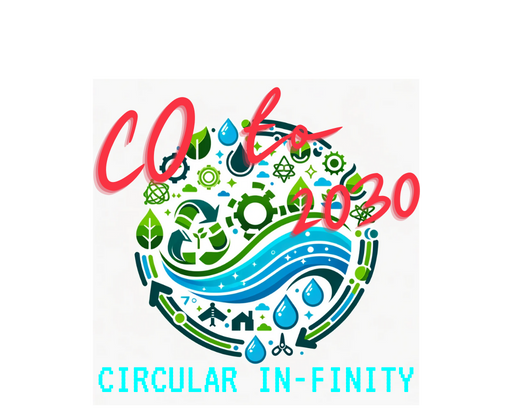
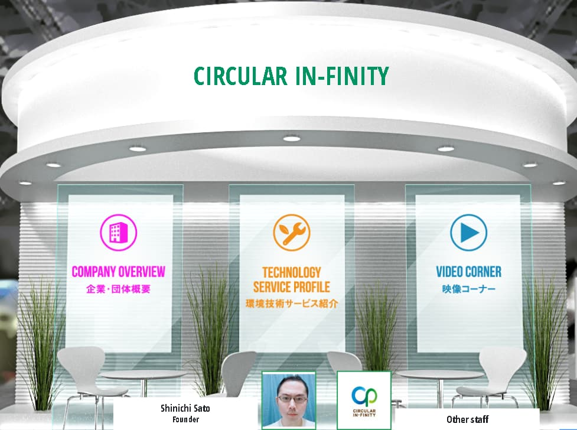
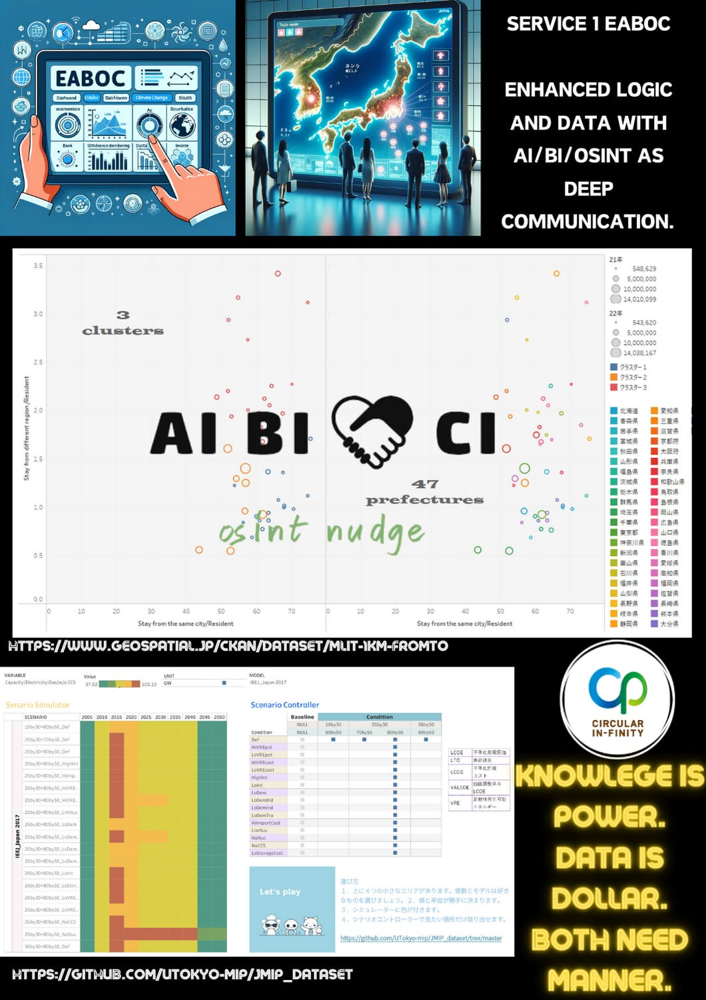
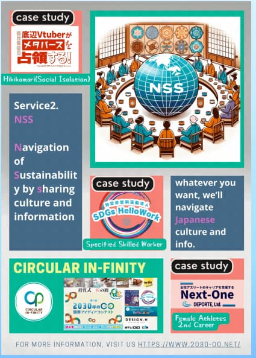
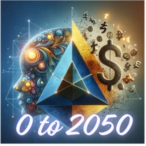

Co-pilot projects
Support pilot projects that turn broad 2030 goals into practical local and global experiments.
Circular In-finity
Climate action, equity, circularity, AI, BI, and project-based learning for people building the world they want to see in 2030.
Circular In-finity connects climate, equity, learning, and data into small but concrete pilot projects. The site collects our activities, public resources, experiments, and partner links in one place.
Four connected lanes organize the activity of Circular In-finity.
Support pilot projects that turn broad 2030 goals into practical local and global experiments.
Use stories, contests, data, and visual works to make climate and SDGs topics easier to enter.
Connect inclusion, sport, hikikomori, universal school ideas, and social design.
Share GPTs, Tableau dashboards, and other tools that help people learn, compare, and act.
Key entry points for current and archived Circular In-finity activities.

Concept works imagining 2030 through stories, visuals, and learning projects.

JPRSI online booth activities connected to COP28 and international collaboration.

Data visualization and public dashboards for learning and decision support.

Experiments with AI assistants, GPTs, and practical knowledge interfaces.
Climate lifestyle, circularity, and behavior-change resources.

DE&I themes across sport, community, education, and social participation.
Useful places to continue exploring Circular In-finity themes.
References for climate, humanitarian issues, and global literacy.
Follow related public activity and writing.
Press releases, archive pages, and related project pages.
For collaboration, questions, or project inquiries, contact the team directly.
Studio F, SDGs Hellowork, Next One, and collaborators supporting learning, inclusion, and creative expression.